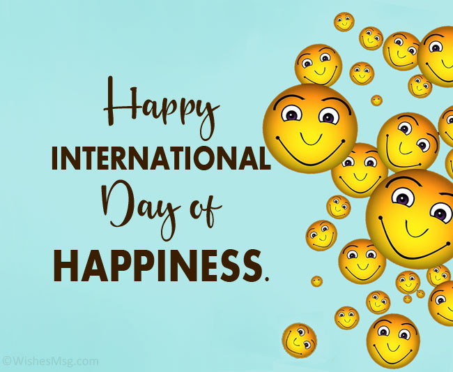
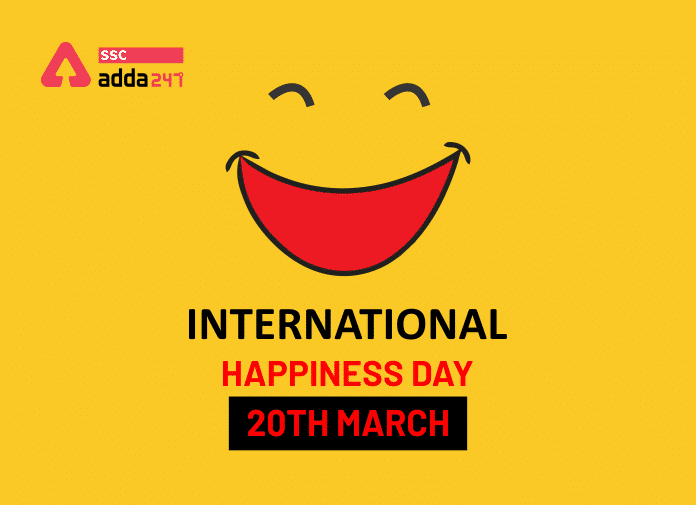

Want to join us voluntarily ?
You can always input your name to sign up!

We are here to inspire
So dont inquire about our dreams
In 2011, the UN General Assembly adopted a resolution which recognised happiness as a “fundamental human goal” and called for “a more inclusive, equitable and balanced approach to economic growth that promotes the happiness and well-being of all peoples”. In 2012 the first ever UN conference on Happiness took place and the UN General Assembly adopted a resolution which decreed that the International Day of Happiness would be observed every year on 20 March. It was celebrated for the first time in 2013.
On World Happiness Day, the United Nations General Assembly calls for people to make more continuous progress and the small things that continue to make their lives better. Share happiness with friends and family on the International Day of Happiness. Taking the time to note and appreciate what oneself have to be thankful for, even the little things, will make people feel happier and more fulfilled in life. Consider making this a daily habit, such as keeping a gratitude log. Spend time with loved ones and try to repair any relationships that are going through a tough patch since good quality relationships are crucial to happiness. Try a step-by-step program, where you meet with like-minded individuals on a daily basis to assist each other in taking action and living healthier lives. You may also donate to or work with a charity that encourages good deeds of your choosing. Social networking is another way to connect with others. It's a particularly powerful tool on this day because it helps us to instantly share and spread our activities, as well as the joy they bring, all over the world
This campaign is a global celebration to mark the United Nations International Day of Happiness. It is coordinated by Action for Happiness, a non-profit movement of people from 160 countries, supported by a partnership of like-minded organisations.
We are a social species and we thrive when we’re closely connected to others. But modern society is leaving more and more people feeling disconnected, isolated or lonely. On the day, We reach out to thousands of people all around the world reached out to make newpositive connections with others during this event.
We encourage people to share authentic images of what makes them happy to "Reclaim Happiness" back from the fake commercial images of happiness that we are so often bombarded with. Many tens of thousands of people shared images and the social reach was estimated to be over 13 million people globally.
Events took place all over the world and we celebrated hundreds of "Happy Heroes" - those people in our communities who do so much to bring happiness to others by giving them certain prizes as well as a VIP ticket to a certain event we're making hereafter

We hope to be able to capture as many momments as we possibly can in order to henceforth bring upon people a new column of light once a year. By sending out some of our team members, we try to capture some of the citizens happy momments throughout and then give the images we took to the ones that we took picture of
Needless to say, Video Capturing is indisputedly one of the most crucial component structurizing the whole event. Not only does it work like a propaganda but also a source of entertainment. Which hereafter might act like a magnet attractting others' attention to the event. These videos will be uploaded on a variety of social media services to raise people's awareness of this special day

We try our best to give the participant of this day's events the most enjoyable leisure by creating different games/gameshows for lots of people to join, games that connect the spirit of everyone, making this event also a great opportunity to make friends. With that being said, our team members will be managing everything in range of the main event section and also some small publically opened events outside the of the main area

As it's the main point of the event, Keeping everyone's happiness is entirely the whole reason for this project. With the support of sponsors, we aim to achieve a great result subsequently. The participants are given a small survey post-event to give feedbacks and also what they felt about the day as well as what can be improved in the future events. Worry not for the crew members cause after the day we will also have time to enjoy ourselves
You can always input your name to sign up!